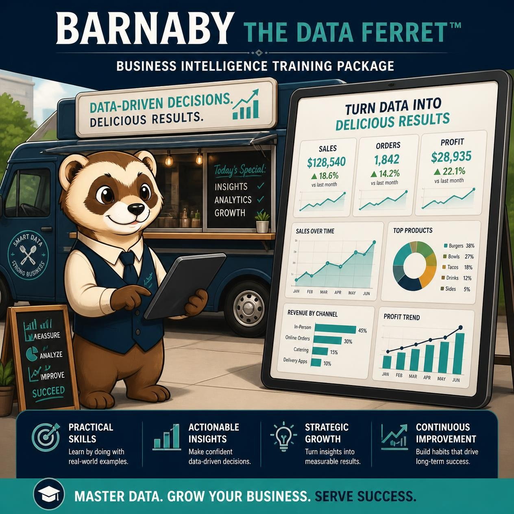

Learn business intelligence, reporting, financial analysis, and analytics through a complete food truck business case study. This toolkit follows a realistic business scenario that progresses from operational data entry through reporting, dashboards, business intelligence, and executive decision-making.
🎥 Watch Demo 💳 Purchase 🐾 Return to The BurrowIf I have to do it twice, there's probably a better way.